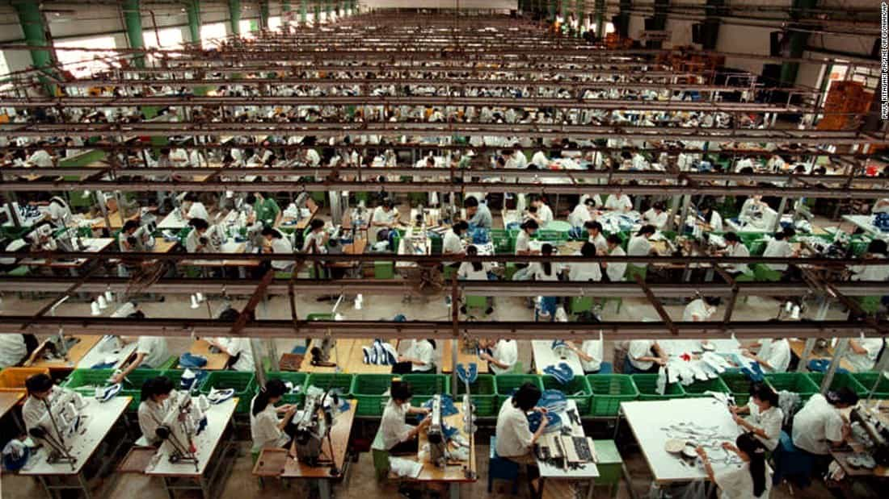

Peyton is a 20-something thought criminal. Despite his best efforts he simply cannot seem to enjoy the decline. He is compelled to resist.


Much has been written about the strange bedfellows of the establishment left. What unites feminists, Islamists, anarchists, Bernie-bros, LGBTQ+, BLM rioters, and Hillary voters often seems to be little more than rebellious hatred for Western Civilization. However, that still does not explain what motivates their upper-echelon donors. What causes the—mostly white and male—chairmen and executives of the Western, corporate elite to financially support the very people who would gladly see them hanged in the streets?
The short answer is a deadly combo of greed and virtue-signaling, exacerbated by a small cohort of anti-white agitators. While this is a varied and complicated issue, for simplicity’s sake this article will focus solely on the effects this has on immigration policy.
Quite tellingly, the entire left and most of the right take it for granted that mass-immigration is not just good, but necessary. Diversity is, after all, our strength, and each year executives across America and Europe fund open-borders politicians, organizations, and media conglomerates to the tune of billions. Why do they do it? What makes the majority of corporate elites support mass-immigration?
The first reason is cheap labor. In the first world, labor is expensive. This is not because Western workers are spoiled, but rather because the costs of living are significantly higher. We have an industrialized economy, massive infrastructure, and a modern educational system. This all makes the West a very good place to conduct business, but as a corollary Westerners can demand a higher price for their labor.
But what if corporations could gain all the benefits of the Western world’s infrastructure and institutions without having to pay first world wages? Historically, this has been partially achieved through outsourcing and offshoring. However, these schemes incur costs of their own, often requiring bribes to foreign governments and installing roads and other infrastructure. All of this is expensive and raises the question: why trouble bringing the factories to the third world when you can bring the third world to the factories? After all, people are cheaper to ship than tons of steel and concrete.

Mass immigration side-steps all the pesky issues associated with employing third worlders in their home nations. It combines the benefits of cheap labor with the comfortable infrastructure of home. As an example, if Carrier air conditioning were to relocate all 21 million denizens of Sri Lanka straight into downtown Indianapolis, they could pay their assembly-line workers thirty cents per day, without the inconvenience of building a factory half-way round the world.
It doesn’t take an MBA to see the serious benefits to the bottom line. An extreme example to be sure, but it illustrates the first major incentive driving pro-immigration executives: the prospect of third world wages right here at home.

The second and arguably more insidious reason corporations support mass immigration is to inflate consumption. Capital is always seeking new markets, but investing in and developing those foreign markets can be risky and expensive. The solution: bring them all here. Instead of waiting for the third world to develop, elites can create first world consumers overnight by importing the populations of the third world to Western countries. The entire project of development can be skipped with a quick boat or plane ride.
Needless to say, the people of Angola will be significantly better positioned to take out car loans and buy cell-phone plans once all 25 million of them have been safely relocated to Denmark.
Similarly, only 7% of the Africans in Burkina Faso have reliable access to electricity; a developmental technicality severely curtailing their ability to order cheap, plastic trinkets off Amazon.com. If we fly them all to America, Amazon won’t have to wait for the Société Nationale d’électricité du Burkina Faso to get its shit together. Whether these new arrivals can afford first world consumption habits is inconsequential. The indigenous white tax-payers will supply the difference via the welfare state. Anything less would be racism.
All joking aside, what these circumstances effectively amount to is the citizens of Europe and America being forced—through taxation—to subsidize corporate profits by financing the very people who are imported to replace them. Any objection has historically been shouted down as racism or xenophobia, and thereby the process has continued unabated.
The banks and businesses of the West generate an ever-growing consumer base for their loans, credit cards, and electronics by siphoning off the fertility surplus of the third world. The effects of this process on the lives, communities, and ancient cultures of the West have been deemed acceptable collateral damage.
The final reason is the twofold benefit provided by virtue-signaling. On the one hand, virtue-signaling about open-borders allows executives to market their corporations as somehow more moral than their competitors. 84 Lumber’s Superbowl commercial provides a memorable example of this ploy. At the same time, doing so allows them to satisfy their own personal need to feel like good people.
Furthermore, I suspect that supporting uncontroversial leftish shibboleths—like open-borders—constitutes a kind of social currency among elites, wherein they compete with each other over who can write the largest checks and proselytize the loudest.
Interestingly, I also suspect that were you to confront any of them on the horror that their philanthropy inevitably produces, you would likely be meet with their genuine shock and disbelief. Their worldviews are formed by the candy-coated narratives presented at galas and fundraisers for wealthy NGO’s such as the International Rescue Committee (IRC). In the below IRC propaganda piece, refugees are presented as aspiring female lawyers and gregarious old Muslim kite-makers. The hoards of young, male economic migrants are strangely absent.
They see this:
Not this:
Reality, it seems, constitutes an unimportant distraction from the feel-good echo-chambers in which elites get to play at being virtuous ‘citizens of the world’, and keep their corporate profits too.
It is this last reason—virtue-signaling—that most damns our elites. It is one thing to knowingly do great evil. It is entirely another to convince yourself you are good for doing it.
Despite careers spent singing the praises of open-borders, in their personal lives elites distance themselves as much as possible from the diversity they claim to love. The hypocrisy is mind-numbing. By dint of their enormous wealth they will never live in the ghettos, favelas, and no-go zones sprouting across the West. Their children will not attend schools equipped with metal detectors and knife wands. They will never wait in line at 7-Eleven behind a scowling Salvadoran draped in MS-13 tattoos. Most of them will live out their entire lives without ever once having to face, publicly or privately, the odious reality of their treason.
Prepare for enrichment…
I cannot see our elites stopping this madness off their own accord. They will likely double down until the bitter end. The only thing standing between them and the total destruction of the Western world are the few of us who know the score. We lack the billions in corporate funding, but truth is on our side, and we won’t let the West go down without a fight.
Read More: How Mass Immigration Is Driven By Female Consumerism And Low Fertility